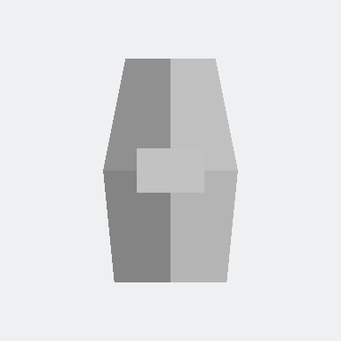
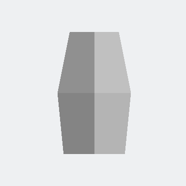
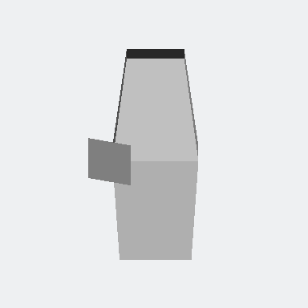

Native GLB compiler fixture
AAA Fantasy Character Studio · v2.0.0 Beta · COMPILED_ONLY
Real CPU geometry renders, not concept art. This is a synthetic compiler fixture, not a humanoid or AAA character. AI Agent execution and matched visual benchmarks are NOT TESTED.
18 triangles · 19 vertices · 2 joints · 1 clip · 26/26 Python tests passed. Repeated GLB compilation matched the original SHA-256.



Evidence
Download GLBCompiler reportUnit testsCamera metadataReproductionPrevious v1 G1 prototype (different test)
Execution-mode evidence
AI Chat: hosted-container fixture tested. AI Agent: not tested. No matched v1/v2 character comparison. The historical v1 prototype remains preserved.
Not verified: AAA visual fidelity, UV overlap, self-intersection, normal/AO bake, deformation, full glTF validation, independent review and target-device performance.